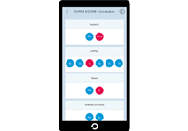
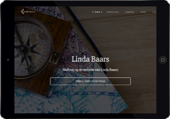

Welkom bij mijn portfolio
Hallo! My naam is Rens Wiebenga.
Ik ben freelance webdesigner en web developer in Utrecht.
Ik ben freelance webdesigner en web developer in Utrecht.

E-modulewijzer
De e-modulewijzer is
ontworpen en ontwikkeld
om producenten van e-learning modules te helpen om een tijdsinschatting te maken.
2015

GameRealm
Gamerealm is een platform voor gamers alsmede voor game developers om hun producten ten toon te stellen aan een breder publiek.
2014

Vaatrisico app
Deze app is ontworpen voor medici om op een gemakkelijke manier het risico te berekenen op hartproblemen van patienten.
2014

I want one of those memes
De webshop 'I want one of those memes' is een side-project en een business venture cgemaakt om meme-merchandise te verkopen.
2012

Portfolio van Linda Baars
Deze 'search engine optimized' website dient als portfolio voor welzijnswerker Linda Baars om haar online aanwezigheid te verhogen.
2012

Sketchwork
Ik oefen met dergelijk sketchwork om mijn design skills voor logo en web design op peil te houden.
2013